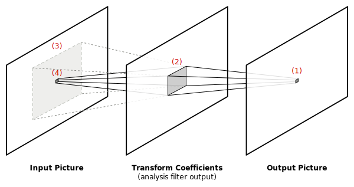
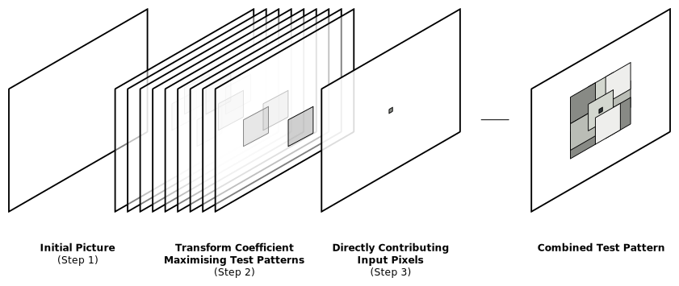

Test pattern generation¶
The signal bounds calculated using affine arithmetic provide hard upper bounds on signal levels in both analysis and synthesis filters. These theoretical bounds are complemented with a set of test patterns which are designed to produce near worst-case signal levels in actual codec implementations. While the theoretical bounds computed using affine arithmetic can be over-estimates, the signal levels reached by these test patterns can be considered a lower-bound on the true worst-case signal levels. Between these two approaches a range of plausible signal levels are identified.
Analysis filter test patterns¶
VC-2’s analysis filters are nearly linear, modulo rounding errors. Since these rounding errors are small, we can produce an acceptable test pattern by treating the analysis filter as a true linear filter.
Synthesis filter test patterns¶
The input to VC-2’s synthesis filter is a set of transform domain coefficients produced by analysing, quantising and then dequantising a picture:
In the figure below lets work backward through the pipeline starting with an output pixel, (1).
The output pixel is computed using a particular set of transform coefficients, (2), generated by the analysis transform (and mutated by the quantisation/dequantisation step).
Each of the transform coefficients in (2) are ultimately the result of filtering a particular region of the input picture (3).
In the absence of quantisation, only the value of the input pixel, (4), has any effect on the output pixel, (1).
When quantisation perturbs transform coefficients, the contributions of values of other pixels in (3) cease to exactly cancel out and begin to effect the output pixel, (1).
Heuristic synthesis test pattern¶
To devise a test pattern which maximises a synthesis decoder value, a simple heuristic is employed: the larger the magnitude of the transform coefficients, the larger the energy that can leak into the target value.
A test pattern which simultaneously attempts to maximise the synthesis target value and the transform coefficients is constructed from a ‘collage’ of test patterns like so:
Start with an empty test pattern.
Ignoring all non-linearities, enumerate the set of transform coefficients (and their weights) that contribute to the target output of the synthesis filter (labelled ‘(2)’ in the previous illustration). For each transform coefficient in turn, in ascending order of weight magnitude:
Compute the test pattern which maximises this transform coefficient in isolation (i.e. the same way the analysis filter test patterns were produced).
If this transform coefficient has a negative weight, invert the test pattern found in ‘a’.
Copy the transform coefficient maximising test pattern into our test pattern, overwriting any previously set pixel values.
Ignoring all non-linearities, enumerate the input pixels which directly contribute to the target synthesis filter output (e.g. pixel ‘(4)’ in the earlier illustration). For each pixel with a positive weight, set the corresponding pixel in our test pattern to its maximum value. For pixels with a negative weight, set the corresponding pixel to the minimum value.
The resulting stack-up of test patterns is illustrated in the figure below:
This test pattern first-and-foremost prioritises features which directly maximise the target value. Next priority is given to features which maximise the transform coefficients with the largest weight (and therefore largest influence on the target value).